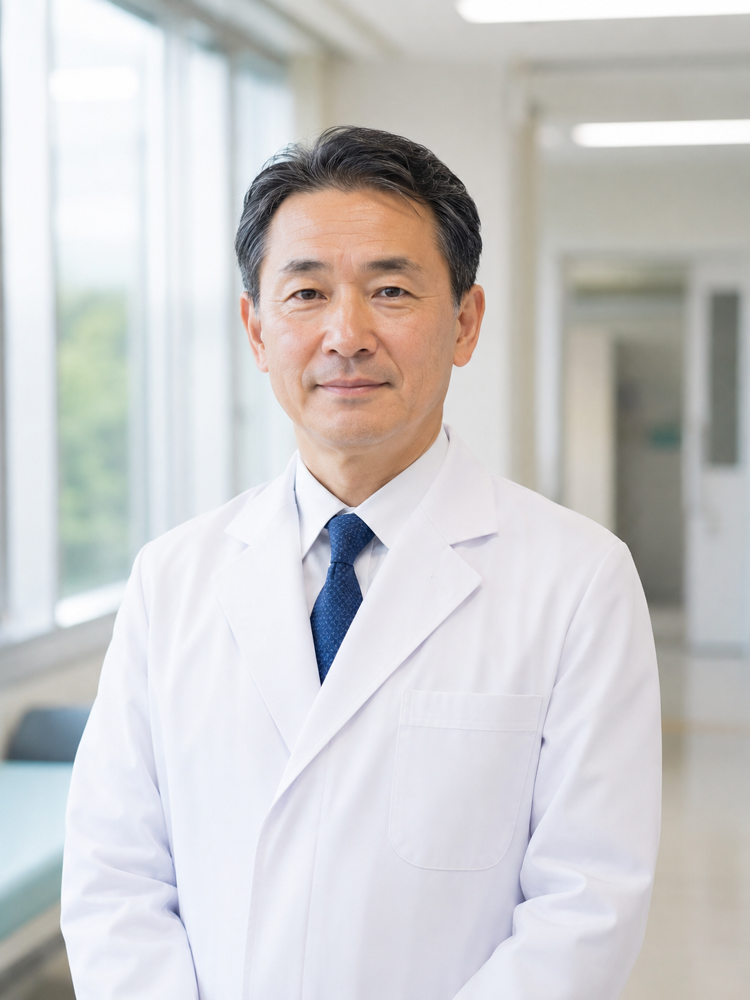

2016年3月、杣木医院に着任。2018年4月、院長に就任。 現在は総合診療、学校健診、地域連携を中心に担当している。

名門病院での勤務経験がありながら、なぜ杉守村に残ったのでしょうか。
榊： 都市部の大きな病院では、専門性の高い医療に集中できる一方で、患者さんの生活そのものを見る機会は限られます。 杉守村では、診察室での会話だけでなく、その人がどのような環境で暮らしているのかまで含めて医療を考える必要があります。
そうした地域医療のあり方に、医師として大切なものがあると感じました。
このたび院長に就任されました。心境はいかがですか。
榊： 責任の重さは感じています。ただ、これまで通り、特別なことをするというより、 地域の方々が安心して通える医療機関であり続けることを大切にしたいと思っています。
杉守村のような地域では、病院は単に診療を行うだけの場所ではありません。 日常の安心を支える場所でもあると思っています。
村の方々との関係づくりで、印象に残っていることはありますか。
榊： 着任した当初から、皆さんが思っていたよりも早く受け入れてくださった印象があります。 私自身は外から来た人間ですが、村では「榊」という姓を覚えてくださる方が多くて。
もちろん、信頼は名前だけで得られるものではありません。 日々の診療や健診の積み重ねを通して、少しずつ関係を作ってきたつもりです。
学校健診や地域健診にも関わっているそうですね。
榊： はい。地域の学校や行政と連携して、定期健診や保健指導を行っています。 小さな地域では、病気になってから来院してもらうだけではなく、普段から体調の変化に気づける仕組みが大切です。
学校健診もその一つです。若い世代の健康状態を把握することは、地域全体を見るうえでも重要だと考えています。
お忙しい毎日の中で、息抜きの時間はありますか。
榊： あまり特別な趣味はありませんが、時間が空いたときに県内の店で柏青哥を少し打つことはあります。 もちろん、長時間いるわけではありませんし、使う金額も決めています。
医療の仕事は緊張が続くので、短い時間でも頭を切り替える場所があるのは悪くないと思っています。
近年、病院周辺の整備や用地取得についても話題になっています。
榊： 地域医療を続けるには、診療体制だけでなく、施設や周辺環境の整備も必要になります。 高齢の患者さんが通いやすい動線を整えたり、健診時に一時的に人が集まるスペースを確保したりする必要がありますから。
土地に関する手続きについては、村の規定に沿って進めています。 私個人の判断だけで動かせるものではありませんし、記録も残っています。
最後に、地域の方々へ伝えたいことをお願いします。
榊： 杣木医院は大きな医療機関ではありませんが、だからこそ一人ひとりの生活に近い距離で医療を提供できます。 これからも杉守村の皆さまが安心して暮らせるよう、地域に根ざした医療を続けていきたいと思います。